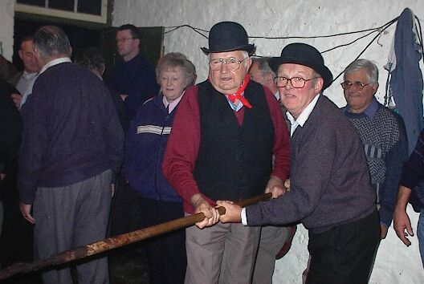

(Pouor faithe 250 livres d'Nièr Beurre )
 |
 |
 |
 |
 |
Nou-s-alleunme lé feu d'âtre à siez heuthes du matîn, nou met l'cidre dans la paîle (grand bachîn en jaune tchuivre) et l'bouort jusqu'à tch'i' sait réduit d'en par la maîntchi - à bein près trais heuthes.
Et pis nou c'menche à ajouôter les pommes qué la compangnie est à p'ler et quarteller. (Nou-s-ôte lé râtchillon, sans doute.)
Nou-s-ajouôte les pommes pus douochement à m'suthe qué la paîle empl'ye. Quand tout est d'dans nou continnue à tchuithe quat' ou chintch' heuthes.
Chucre, limons et ricolisse daivent êt' mins deux heuthes auprès qu'lé dèrnié lot d'pommes a 'té ajouôté dans la paîle.
Quand nou crait qué l'nièr beurre est beintôt tchuit nou-s-en met eune livre ou d'même dans eune souôtasse et nou juge atout eune tchulyi en bouais quant à sa tchuituthe.
En d'valant la paîle dé d'ssus l'feu d'trépid (tâche catouoilleuse et pas aîsie) nou s'èrmet à mouer, comme nou-s-a fait tout l'long du temps d'pis l'c'menchement, pouor eune dgiexaine dé minnutes car y'a dangi qu'l'affaithe happe. Ch'est dans chu temps-chin, étout, qu'nou-s-y met l'épice.
La tchuituthe prend tout ensembl'ye 24 heuthes. Les dèrnié trais heuthes fournissent lé pus fort travas et l's hommes prennent châtchun lus tou au moueux ou rabot, ou même deux hommes à la fais.
lé Nièr Beurre 
Viyiz étout:
{kind=link}
{kind=link}